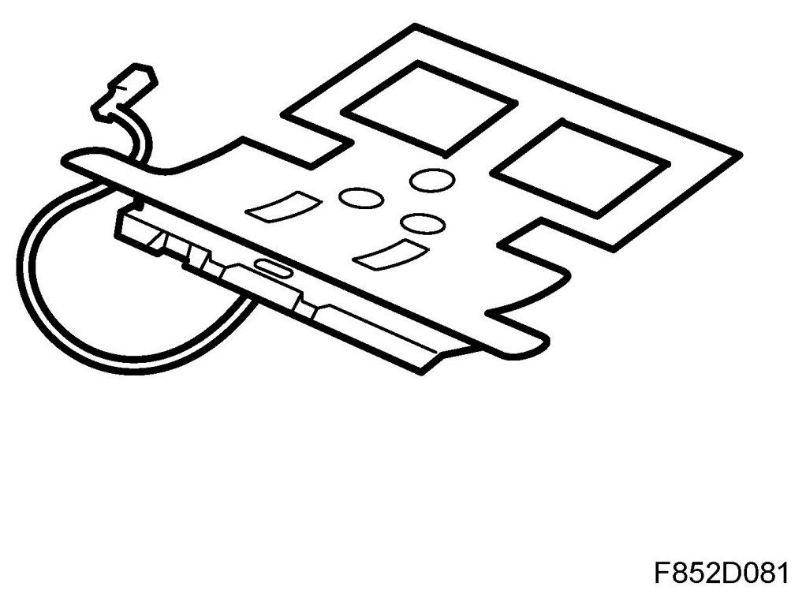
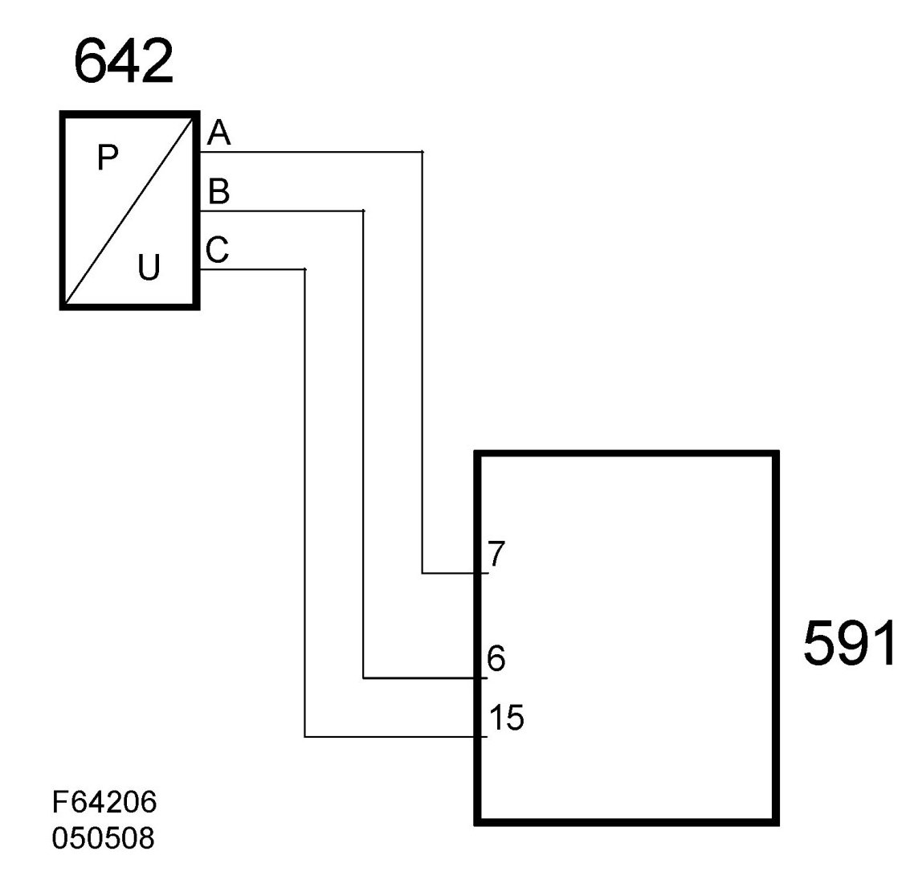

Pressure Sensor, Occupied Seat Cushion, Front Passenger (642)
Pressure Sensor, Occupied Seat Cushion, Front Passenger (642)
Location
Pressure sensor, occupied seat cushion, front passenger (642).

Main task
To detect the weight in the seat.
Type
Silicone filled seat mat with pressure sensor for detecting the weight in the seat.
Connect
The silicone filled seat mat with pressure sensor (642) is supplied with 5 volts on pin A from control module (591) pin 7 and grounded on pin C from control module (591) pin 14. The signal from the pressure sensor pin B is connected to pin 6 on the control module (591).

Function
The seat mat is a plastic mat filled with silicone. The silicone in the seat mat affects the pressure sensor. In the pressure sensor are two metal-coated ceramic discs mounted close to each other. The disc closest to the pressure connection is thinner and bends with exerted to pressure. The capacitance between the metal coatings on the discs will hereby change depending on the pressure. Integrated in the sensor is a circuit that converts the capacitance into an analogue voltage.